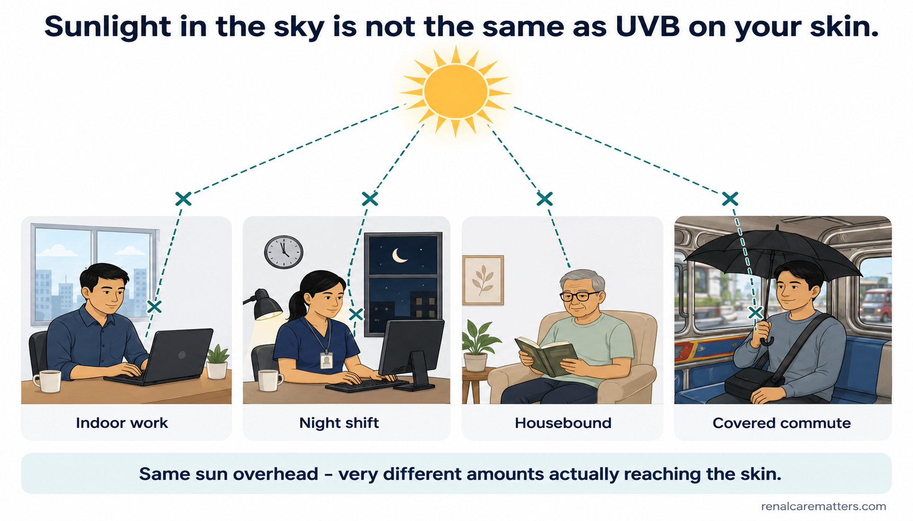
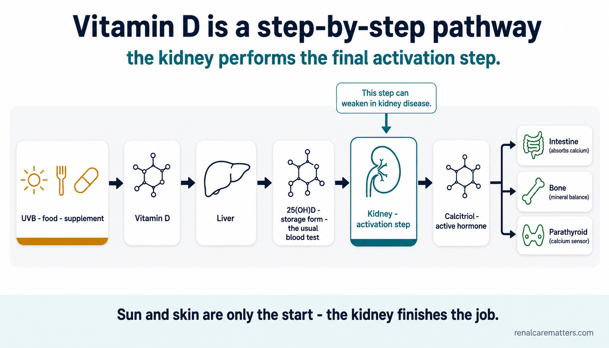
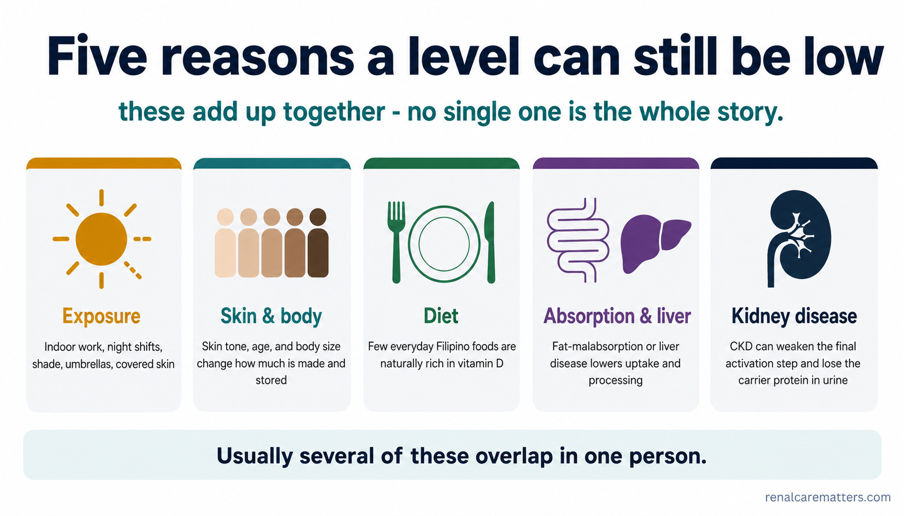
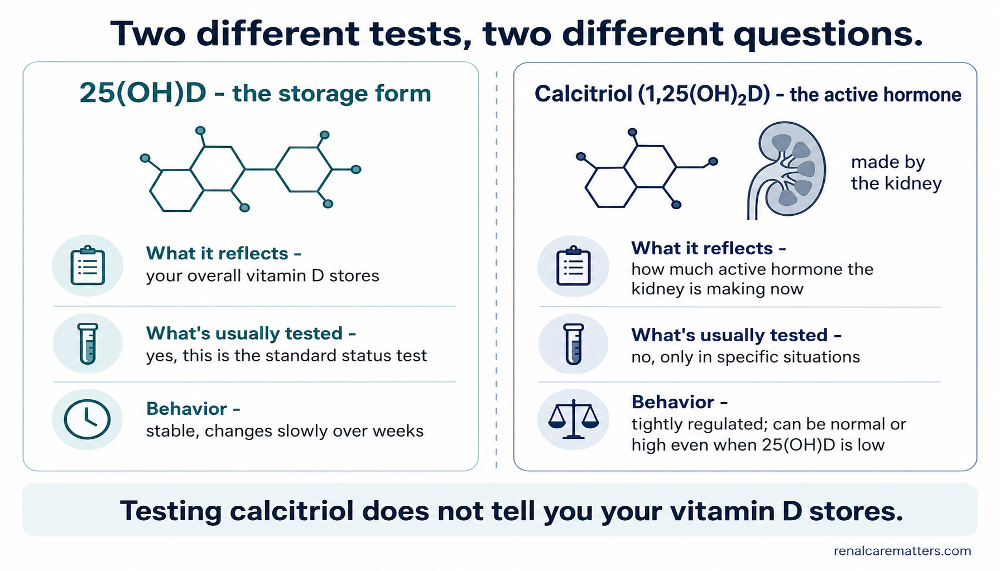
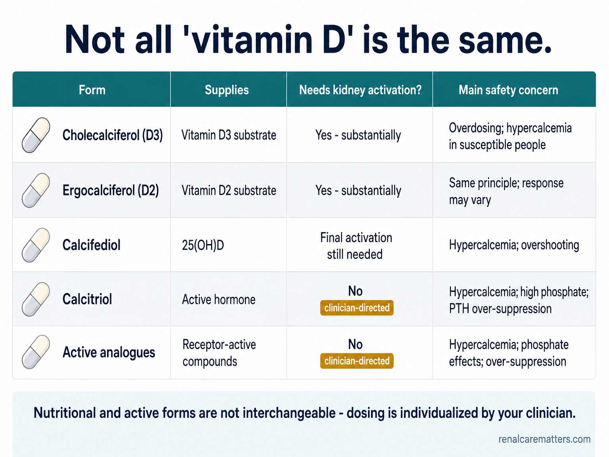
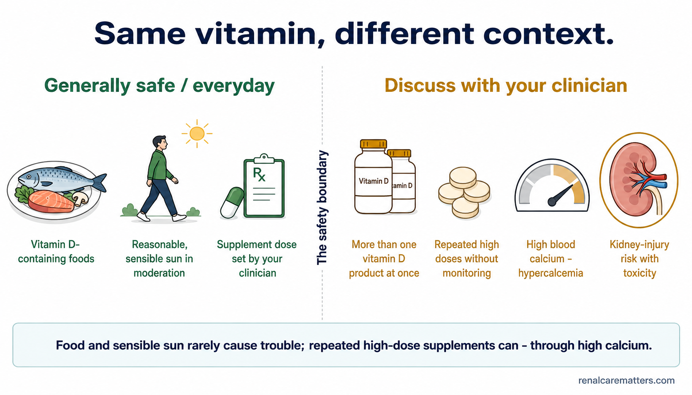
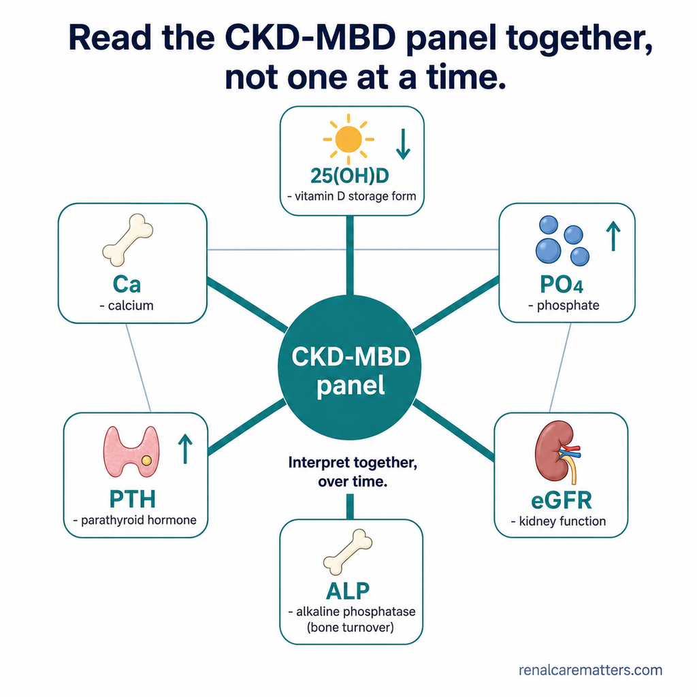
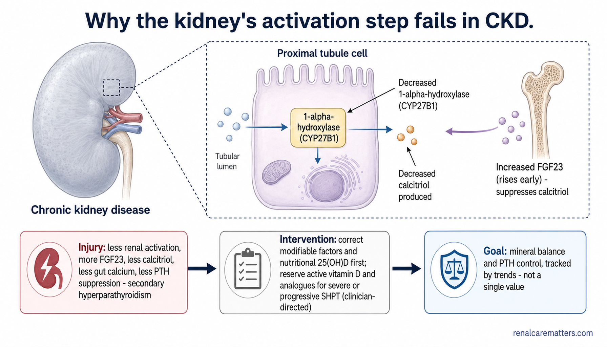

The Sunshine ParadoxAng Kabalintunaan ng Sikat ng ArawAng Kontra-sulti sa Silaw sa AdlawIng Kabalintunaan ning Aslagan
Sunlight availability is not the same as effective ultraviolet B (UVB) exposure. The Philippines has sun almost every day of the year, yet a low vitamin D result is one of the more common findings doctors see when they order the test. That is not a contradiction — it is a chain with several links, and any one of them can break.Ang pagkakaroon ng sikat ng araw ay hindi katulad ng epektibong UVB exposure. Halos araw-araw may sikat ng araw sa Pilipinas, ngunit ang mababang vitamin D ay isa sa mas karaniwang resulta na nakikita ng mga doktor kapag nag-order sila ng pagsusuri. Hindi ito kontradiksyon — ito ay isang tanikala na may ilang kawing, at ang alinman sa mga ito ay maaaring masira.Ang pagkaanaa sa silaw sa adlaw dili parehas sa epektibo nga UVB exposure. Halos matag adlaw naa'y silaw sa adlaw sa Pilipinas, apan ang ubos nga vitamin D usa sa mas komon nga resulta nga makita sa mga doktor kung mag-order sila og pagsulay. Dili kini kontradiksyon — usa kini ka kadena nga adunay pipila ka sumpay, ug bisan asa niini mahimong maputol.Ing atin ning aslagan e a pante king epektibong UVB a natatanggap. Halos aldo-aldo atin aslagan king Pilipinas, dapot ing mababang vitamin D metung ya karing mas malimit a resulta a akakit da reng doktor istung mag-order lang pamanyuri. E ini kontradiksyon — metung yang tanikala a maki pilan kawing, at ing aliwa kareti malyari yang mapali.
This guide walks that chain from skin to liver to kidney, in plain language, using Filipino examples. It also explains why the answer is almost never “everyone should take a supplement” and almost always “it depends.”Susundan ng gabay na ito ang tanikalang iyon mula sa balat hanggang sa atay hanggang sa bato, sa simpleng wika, gamit ang mga halimbawang Pilipino. Ipinapaliwanag din nito kung bakit halos hindi kailanman ang sagot ay “dapat uminom ang lahat ng supplement” at halos palaging “depende ito.”Sundan sa giya nga kini ang kadena gikan sa panit hangtod sa atay ug sa kidney, sa yano nga pinulongan, gamit ang mga Pilipino nga panig-ingnan. Gipatin-aw usab niini kung nganong halos dili gayod ang tubag “angay moinom sa suplemento ang tanan” ug halos kanunay “nagdepende kini.”Sundan ning gabay a iti ing tanikalang ita manibat king balat anggang king atay anggang king bato, king simpleng amanu, gamitan reng ehemplung Filipino. Ipaliwanag mu na rin nita bakit e malimit ing sagut “dapat inuman deng eganagana ning supplement” at malimit “depende ya iti.”
Key ideaPangunahing ideyaNag-unang ideyaPangybatan a ideya
Sunlight in the environment is not the same as UVB reaching your skin. Time of day, cloud cover, pollution, clothing, and how much skin is exposed all decide the final result — not just the country you live in.Ang sikat ng araw sa kapaligiran ay hindi katulad ng UVB na umaabot sa iyong balat. Ang oras ng araw, ulap, polusyon, damit, at kung gaano karaming balat ang nakalantad ang nagpapasya sa huling resulta — hindi lang ang bansang tinitirhan mo.Ang silaw sa adlaw sa palibot dili parehas sa UVB nga miabot sa imong panit. Ang oras sa adlaw, panganod, polusyon, sinina, ug kung pila ka bahin sa panit ang naabli ang nagdesisyon sa katapusang resulta — dili lang ang nasod nga imong gipuy-an.Ing aslagan king palibut e ya pante king UVB a datang king balat mu. Ing oras ning aldo, dagum, polusyon, damit, at pilan ing balat a nakalitaw ing mamagdesisyon king ultimong resulta — e mu la ing bansang mestiran mu.

Four everyday Filipino scenes under one shared sun — indoor work, night shift, housebound, and covered commute — each with an interrupted ray, showing that little UVB actually reaches the skin.Apat na pang-araw-araw na eksenang Pilipino sa ilalim ng iisang araw — trabahong nasa loob, night shift, nakakulong sa bahay, at nakatakip na pagbibiyahe — na may naputol na sinag, ipinapakita na kaunting UVB lang ang talagang umaabot sa balat.Upat ka adlaw-adlaw nga Pilipino nga talan-awon ubos sa usa ka adlaw — trabaho sa sulod, night shift, dili makagawas, ug sinina nga pagbiyahe — nga adunay naputol nga silaw, nga nagpakita nga gamay ra nga UVB ang tinuod nga makaabot sa panit.Apat a aldo-aldo a eksenang Filipino king lalam ning metung a aldo — obrang atyu king kilub, night shift, e makalwal king bale, at nakatakap a pamagbiahi — a atin naputul a sinag, papakit na ditak mu a UVB ing tutung datang king balat.
- UVB
- Ultraviolet B — the band of sunlight that starts vitamin D production in skin
Vitamin D Is a Hormone Pathway, Not Just a VitaminAng Vitamin D ay Isang Daanan ng Hormone, Hindi Lang Isang BitaminaAng Vitamin D Usa ka Dalan sa Hormone, Dili Lang usa ka BitaminaIng Vitamin D Metung Yang Dalan ning Hormone, E Mu Lang Metung a Bitamina
Vitamin D starts as a raw material, not a finished hormone. The usual blood test measures this storage form, called 25-hydroxyvitamin D (25(OH)D) — not the final active hormone. Your body still has to build the active form step by step.Nagsisimula ang vitamin D bilang hilaw na materyal, hindi tapos na hormone. Ang karaniwang pagsusuri sa dugo ay sumusukat sa storage form na ito, tinatawag na 25-hydroxyvitamin D (25(OH)D) — hindi ang huling aktibong hormone. Kailangan pa ring buuin ng iyong katawan ang aktibong anyo nang paunti-unti.Nagsugod ang vitamin D isip hilaw nga materyales, dili tapos nga hormone. Ang naandan nga pagsulay sa dugo nagsukod sa storage form nga kini, gitawag og 25-hydroxyvitamin D (25(OH)D) — dili ang katapusang aktibo nga hormone. Kinahanglan pa nga tukuron sa imong lawas ang aktibo nga porma sa inagi-inagi.Ing vitamin D magumpisa yang hilaw a materyal, e ya tapus a hormone. Ing kaugaliang pamanyuri king daya sinusukat na ing storage form a iti, ilaladawan a 25-hydroxyvitamin D (25(OH)D) — e ing huling aktibong hormone. Kailangan pa nong buuin ning laman mu ing aktibong anyo pauntipunti.
| StepHakbangLakangHakbang | What happensAno ang nangyayariUnsa ang mahitaboNanu ing malilyari |
|---|---|
| 1. SkinBalatPanitBalat | Ultraviolet B (UVB) light from the sun starts vitamin D3 production in the skin. Food and supplements can also supply vitamin D2 or D3 directly.Sinisimulan ng ultraviolet B (UVB) na liwanag mula sa araw ang produksyon ng vitamin D3 sa balat. Ang pagkain at supplement ay maaari ring magbigay ng vitamin D2 o D3 nang direkta.Ang ultraviolet B (UVB) nga kahayag gikan sa adlaw magsugod sa produksyon sa vitamin D3 diha sa panit. Ang pagkaon ug suplemento mahimo usab maghatag og vitamin D2 o D3 direkta.Ing ultraviolet B (UVB) a sala manibat king aldo umpisan na ing produksyon ning vitamin D3 king balat. Ing pamangan at supplement malyari lang mibie vitamin D2 o D3 a direkta. |
| 2. LiverAtayAtayAtay | The liver converts vitamin D into 25(OH)D — the storage form measured on a routine blood test.Ginagawa ng atay ang vitamin D na 25(OH)D — ang storage form na sinusukat sa karaniwang pagsusuri sa dugo.Gihimo sa atay ang vitamin D nga 25(OH)D — ang storage form nga gisukod sa naandan nga pagsulay sa dugo.Gagawan ning atay ing vitamin D a maging 25(OH)D — ing storage form a sinusukat king kaugaliang pamanyuri king daya. |
| 3. KidneyBatoKidneyBato | The kidney converts 25(OH)D into calcitriol, the final active hormone, using an enzyme called 1-alpha-hydroxylase.Ginagawa ng bato ang 25(OH)D na calcitriol, ang huling aktibong hormone, gamit ang enzyme na tinatawag na 1-alpha-hydroxylase.Gihimo sa kidney ang 25(OH)D nga calcitriol, ang katapusang aktibo nga hormone, gamit ang enzyme nga gitawag og 1-alpha-hydroxylase.Gagawan ning bato ing 25(OH)D a maging calcitriol, ing huling aktibong hormone, gamit ing enzyme a ilaladawan a 1-alpha-hydroxylase. |
| 4. Target tissuesTarget na tisyuTarget nga tisyuTarget a tisyu | Calcitriol acts on the intestine, bone, and parathyroid glands — helping the body absorb calcium and keep bones and minerals in balance.Kumikilos ang calcitriol sa bituka, buto, at parathyroid glands — tumutulong sa katawan na sipsipin ang calcium at panatilihing balanse ang buto at mineral.Molihok ang calcitriol sa tinai, bukog, ug parathyroid glands — motabang sa lawas nga mosuyup sa calcium ug magpabilin nga balanse ang bukog ug mineral.Kikilos ya ing calcitriol king bituka, butu, at parathyroid glands — makasaup king laman a mansi king calcium at panatilian a balanse ing butu at mineral. |
This is why the kidneys matter so much in this story: they are not just a passenger, they are the final activation step. When kidney function declines, that last step can weaken — even if the earlier steps (sun, skin, liver) are working fine.Kaya naman napakahalaga ng bato sa kuwentong ito: hindi lang sila pasahero, sila ang huling hakbang ng activation. Kapag humina ang function ng bato, maaaring humina ang huling hakbang na ito — kahit maayos ang mga naunang hakbang (araw, balat, atay).Mao nga hinungdanon kaayo ang kidney niini nga istorya: dili lang sila pasahero, sila ang katapusang lakang sa activation. Kung mohuyang ang function sa kidney, mahimong maluya kining katapusang lakang — bisan pa maayo ang mga nag-una nga lakang (adlaw, panit, atay).Iyan ing dahilan bakit mayabe ing bato king estoryang iti: e la mu lang pasahero, sila ing huling hakbang ning activation. Istung humina ing function ning bato, malyaring humina ing huling hakbang a iti — agyang mayap la pa deng naunang hakbang (aldo, balat, atay).

A left-to-right pathway: UVB, food and supplements make vitamin D; the liver makes 25(OH)D (the storage form and usual test); the kidney makes active calcitriol, which acts on intestine, bone, and parathyroid — and the kidney step can weaken in kidney disease.Isang daanan mula kaliwa pakanan: UVB, pagkain at supplement ang gumagawa ng vitamin D; ginagawa ng atay ang 25(OH)D (ang storage form at karaniwang pagsusuri); ginagawa ng bato ang aktibong calcitriol na kumikilos sa bituka, buto, at parathyroid — at maaaring humina ang hakbang ng bato sa sakit sa bato.Usa ka dalan gikan sa wala paingon sa tuo: UVB, pagkaon ug suplemento naghimo og vitamin D; ang atay naghimo og 25(OH)D (ang storage form ug naandan nga pagsulay); ang kidney naghimo og aktibo nga calcitriol nga molihok sa tinai, bukog, ug parathyroid — ug mahimong mohuyang ang lakang sa kidney sa sakit sa kidney.Metung a dalan manibat kaili paras wanan: UVB, pamangan at supplement gagawa lang vitamin D; ing atay gagawa yang 25(OH)D (ing storage form at kaugaliang pamanyuri); ing bato gagawa yang aktibong calcitriol a kikilos king bituka, butu, at parathyroid — at malyaring humina ing hakbang ning bato king sakit king bato.
- UVB
- Ultraviolet B
- 25(OH)D
- 25-hydroxyvitamin D — the storage form measured on a routine blood test
Five Reasons Levels Can Still Be LowLimang Dahilan Kung Bakit Maaaring Mababa Pa RinLima ka Rason Nga Mahimong Ubos GihaponLimang Dahilan Bakit Malyaring Mababa Pa Rin
In my clinic, roughly 80–90% of the patients I choose to test have a vitamin D result below the laboratory's reference or decision threshold. This is a clinical observation, not an estimate of prevalence among all Filipinos — patients selected for testing often already have kidney disease, diabetes, obesity, limited mobility, or another reason for low vitamin D.Sa aking klinika, humigit-kumulang 80–90% ng mga pasyenteng pinipili kong suriin ay may resulta ng vitamin D na mas mababa sa reference o decision threshold ng laboratoryo. Isa itong obserbasyong klinikal, hindi tantiya ng saklaw sa lahat ng Pilipino — ang mga pasyenteng pinili para sa pagsusuri ay kadalasang mayroon nang sakit sa bato, diabetes, obesidad, limitadong galaw, o iba pang dahilan ng mababang vitamin D.Sa akong klinika, mga 80–90% sa mga pasyente nga akong gipili nga suwayon adunay resulta sa vitamin D nga ubos sa reference o decision threshold sa laboratoryo. Kini usa ka klinikal nga obserbasyon, dili banabana sa prevalence taliwala sa tanang Pilipino — ang mga pasyente nga gipili para sa pagsulay kasagaran naa nay sakit sa kidney, diabetes, obesidad, limitado nga paglihok, o laing rason sa ubos nga vitamin D.King klinika ku, mga 80–90% da reng pasyenteng piniling ku pamanyurian atin lang resulta ning vitamin D a mas mababa king reference o decision threshold ning laboratoryo. Metung yang klinikal a obserbasyon, e ya tantya ning prevalence king kaganagana Filipino — deng pasyenteng piniling pamanyurian malimit atin nong sakit king bato, diabetes, obesidad, limitadong ustus, o aliwang dahilan ning mababang vitamin D.
The observation still raises a real questionMay tunay na tanong pa rin ang obserbasyonAdunay tinuod nga pangutana ang obserbasyonAtin pa ring tutuk a tanung ing obserbasyon
Never display this as “80–90% of Filipinos are deficient.” The observation is worth studying, not generalizing — and it raises a genuine question: why can low vitamin D be so common in a country with abundant sunlight?Huwag itong ipakita bilang “80–90% ng mga Pilipino ay kulang sa vitamin D.” Ang obserbasyon ay karapat-dapat pag-aralan, hindi gawing pangkalahatan — at nagtataas ito ng tunay na tanong: bakit maaaring maging napakakaraniwan ang mababang vitamin D sa isang bansang sagana sa sikat ng araw?Ayaw kini ipakita isip “80–90% sa mga Pilipino ang kulang sa vitamin D.” Angay tun-an ang obserbasyon, dili i-generalize — ug nagpatunghag tinuod nga pangutana kini: nganong mahimong sagad kaayo ang ubos nga vitamin D sa usa ka nasod nga daghan og silaw sa adlaw?Ela ini ipakit a “80–90% da reng Filipino ing kulang king vitamin D.” Dapat pag-aralan ing obserbasyon, e ya gawan pangkalahatan — at mitatas yang tutuk a tanung: bakit malyaring maging malimit ing mababang vitamin D king metung a bansang masagana king aslagan?
ExposurePagkalantadPagkaladladPamaka-aslag
Indoor work, night shifts, covered commuting, shade, umbrellas, heat avoidance, and limited mobility all cut down the UVB your skin actually receives — even under a sunny sky.Ang trabahong nasa loob, night shift, nakatakip na pagbibiyahe, lilim, payong, pag-iwas sa init, at limitadong galaw ay nagbabawas sa UVB na talagang natatanggap ng iyong balat — kahit sa ilalim ng maaraw na langit.Ang trabaho sa sulod, night shift, sinina nga pagbiyahe, landong, payong, paglikay sa init, ug limitado nga paglihok magpakunhod sa UVB nga tinuod nga madawat sa imong panit — bisan ubos sa mainit-init nga langit.Ing obrang atyu king kilub, night shift, nakatakap a pamagbiahi, silong, payong, pamag-ilag king pali, at limitadong ustus mamawas king UVB a tutung atatanggap ning balat mu — agyang king lalam ning maaldo a banua.
Skin & bodyBalat at katawanPanit ug lawasBalat at katawan
Darker skin pigmentation needs more UVB to make the same amount of vitamin D. Aging skin makes it less efficiently, and vitamin D is fat-soluble, so it distributes differently in a larger body.Ang mas maitim na pigmentasyon ng balat ay nangangailangan ng mas maraming UVB para gawin ang parehong dami ng vitamin D. Ang tumatandang balat ay hindi gaanong mahusay sa paggawa nito, at ang vitamin D ay fat-soluble, kaya't naiiba ang pamamahagi nito sa mas malaking katawan.Ang mas itom nga pigmentasyon sa panit nagkinahanglan og mas daghang UVB aron makahimo sa samang gidaghanon sa vitamin D. Ang nagkatigulang nga panit dili kaayo episyente sa paghimo niini, ug ang vitamin D fat-soluble, mao nga lahi ang pagkatibulaag niini sa mas dako nga lawas.Ing mas maitim a pigmentasyon ning balat mangailangan yang mas dakal a UVB bang gawan ing pareho a dakal a vitamin D. Ing tumatuang balat e ne masyadung episyente king pamanggawa niti, at ing vitamin D fat-soluble ya, anya meyalta ing pamamigi niti king mas maragul a katawan.
DietDiyetaDiyetaDiyeta
Very few everyday Filipino foods are naturally rich in vitamin D. Without fatty fish, egg yolk, or fortified foods, food alone is often not enough.Kakaunti lang sa pang-araw-araw na pagkaing Pilipino ang likas na mayaman sa vitamin D. Kung walang mataba na isda, pula ng itlog, o fortified na pagkain, kadalasang hindi sapat ang pagkain lamang.Gamay ra kaayo sa adlaw-adlaw nga pagkaon nga Pilipino ang natural nga dato sa vitamin D. Kung walay tambok nga isda, dalag sa itlog, o fortified nga pagkaon, kasagaran dili igo ang pagkaon lamang.Ditak la mu reng aldo-aldo a pamangan Filipino a natural a mayaman king vitamin D. Nung alang mantika a asan, pula ning ‘tlug, o fortified a pamangan, malimit e sapat ing pamangan mu.
Absorption & liverPagsipsip at atayPagsuyup ug atayPamamansi at atay
Conditions that affect fat absorption — malabsorption, bariatric surgery, chronic liver disease — can lower how much vitamin D the body takes up and processes.Ang mga kondisyong nakakaapekto sa pagsipsip ng taba — malabsorption, bariatric surgery, chronic liver disease — ay maaaring magpababa sa dami ng vitamin D na nasisipsip at napoproseso ng katawan.Ang mga kondisyon nga nakaapekto sa pagsuyup sa tambok — malabsorption, bariatric surgery, chronic liver disease — mahimong makapaubos sa gidaghanon sa vitamin D nga masuyup ug maproseso sa lawas.Deng kondisyong makaapektu king pamamansi ning taba — malabsorption, bariatric surgery, chronic liver disease — malyari nong mamababa king dakal a vitamin D a amamansi at aproproseso ning katawan.
Kidney diseaseSakit sa batoSakit sa kidneySakit king bato
Chronic kidney disease (CKD) can impair the final activation step and, in some protein-losing conditions, increase urinary loss of the protein that carries vitamin D in the blood.Ang chronic kidney disease (CKD) ay maaaring makasira sa huling hakbang ng activation at, sa ilang kondisyong nawawalan ng protina, magpataas ng pagkawala ng protina sa ihi na nagdadala ng vitamin D sa dugo.Ang chronic kidney disease (CKD) mahimong makadaot sa katapusang lakang sa activation ug, sa pipila ka kondisyon nga mawad-an og protina, makadugang sa pagkawala sa ihi sa protina nga nagdala sa vitamin D sa dugo.Ing chronic kidney disease (CKD) malyaring makasira king huling hakbang ning activation at, karing pilan a kondisyong mawawalan protina, mamataas king pamawala king ini ning protina a magdala king vitamin D king daya.
Sunscreen is still worth usingSulit pa ring gamitin ang sunscreenSulti gihapon nga gamiton ang sunscreenMalaus ya pa ring gamitan ing sunscreen
This guide never suggests avoiding sun protection. Skin cancer risk and heat safety still matter — the goal is understanding the whole picture, not trading one risk for another.Kailanman ay hindi iminumungkahi ng gabay na ito na iwasan ang proteksyon sa araw. Mahalaga pa rin ang panganib ng skin cancer at kaligtasan sa init — ang layunin ay unawain ang buong larawan, hindi ipagpalit ang isang panganib para sa iba.Wala gyud gisugyot niini nga giya nga likayan ang proteksyon sa adlaw. Importante gihapon ang risgo sa skin cancer ug kahilwasan sa init — ang tumong mao ang pagsabot sa tibuok hulagway, dili ang pagbaylo sa usa ka risgo alang sa lain.Alang yang isulong ning gabay a ilagan ing proteksyon king aldo. Mayabe pa rin ing peligru ning skin cancer at kaligtasan king pali — ing tutuk ilulub ing bilug a laraman, ali ing pamalit metung a peligru para king aliwa.

Five equal cards for why vitamin D can be low — exposure, skin and body, diet, absorption and liver, and kidney disease — shown as co-existing factors, not a ranking.Limang magkakaparehong card kung bakit maaaring mababa ang vitamin D — pagkalantad, balat at katawan, diyeta, pagsipsip at atay, at sakit sa bato — na magkakasabay na mga salik, hindi ranggo.Lima ka managsama nga card kung nganong ubos ang vitamin D — pagkaladlad, panit ug lawas, diyeta, pagsuyup ug atay, ug sakit sa kidney — nga dungan nga mga hinungdan, dili ranggo.Limang mikakapareho a card bakit malyaring mababa ing vitamin D — pamaka-aslag, balat at katawan, diyeta, pamamansi at atay, at sakit king bato — a mikakayabe a salik, e ranggo.
- UVB
- Ultraviolet B
- CKD
- Chronic kidney disease
What Vitamin D Clearly Does — and What Is Still UncertainAno ang Malinaw na Ginagawa ng Vitamin D — at Ano ang Hindi Pa TiyakUnsa ang Klaro nga Buhaton sa Vitamin D — ug Unsa ang Wala Pa SiguradoNanu ing Malino a Gagawan na ning Vitamin D — at Nanu ing Ali Pa Sigurado
Vitamin D has clearly proven roles: calcium and phosphate balance, intestinal calcium absorption, bone mineralization, preventing and treating rickets and osteomalacia, regulating parathyroid hormone (PTH), and normal muscle function.May malinaw na napatunayang papel ang vitamin D: balanse ng calcium at phosphate, pagsipsip ng calcium sa bituka, pagpapatigas ng buto, pag-iwas at paggamot ng rickets at osteomalacia, pagre-regulate ng parathyroid hormone (PTH), at normal na paggana ng kalamnan.Adunay klaro nga napamatud-an nga papel ang vitamin D: balanse sa calcium ug phosphate, pagsuyup sa calcium sa tinai, pagpatig-a sa bukog, pag-iwas ug pagtambal sa rickets ug osteomalacia, pag-regulate sa parathyroid hormone (PTH), ug normal nga paglihok sa kaunuran.Atin yang malinong napatutwan a papel ing vitamin D: balanse ning calcium at phosphate, pamamansi ning calcium king atian, pamagpatigas ning butu, pamag-ilag at pamanggamut king rickets at osteomalacia, pamag-regulate king parathyroid hormone (PTH), at normal a gawa ning lasa.
Beyond that, many diseases are linked to low vitamin D in observational studies — heart disease, cancer, diabetes, autoimmune disease, depression, and infections. Those links are real findings, but they are associations, not proof that taking a supplement prevents the disease.Higit dito, maraming sakit ang naka-link sa mababang vitamin D sa mga observational study — sakit sa puso, kanser, diabetes, autoimmune disease, depression, at impeksyon. Totoo ang mga koneksyong iyon, ngunit ito ay mga asosasyon, hindi patunay na ang pag-inom ng supplement ay pumipigil sa sakit.Labaw pa niini, daghang sakit ang naka-link sa ubos nga vitamin D sa mga observational study — sakit sa kasingkasing, kanser, diabetes, autoimmune disease, depression, ug impeksyon. Tinuod kadtong mga koneksyon, apan mga asosasyon lang kini, dili pamatuod nga ang pag-inom og suplemento makapugong sa sakit.Ibat kaniti, dakal a sakit ing naka-link king mababang vitamin D karing observational study — sakit king pusu, kanser, diabetes, autoimmune disease, depression, at impeksyon. Tutu la reng koneksyon a ita, dapot association la, e patutwan a ing pamaminum king supplement ipipigil ne ing sakit.
| Evidence categoryKategorya ng ebidensyaKategoriya sa ebidensyaKategoriya ning ebidensya | What this means for youAno ang ibig sabihin nito para sa iyoUnsa ang kahulugan niini para kanimoNanu ing kabaldugan niti para keka |
|---|---|
| EstablishedNapatunayanNapamatud-anNapatutwan | Rickets, osteomalacia, calcium–phosphate balance, correcting a documented deficiency — vitamin D treatment has a clear role.Rickets, osteomalacia, balanse ng calcium–phosphate, pagwawasto ng dokumentadong kakulangan — may malinaw na papel ang paggamot na vitamin D.Rickets, osteomalacia, balanse sa calcium–phosphate, pagtul-id sa dokumentado nga kakulangan — adunay klaro nga papel ang tambal nga vitamin D.Rickets, osteomalacia, balanse ning calcium–phosphate, pamituldu king dokumentadong kakulangan — atin malinong papel ing panggamut a vitamin D. |
| Context-dependentDepende sa kontekstoNagdepende sa kontekstoDepende king konteksto | Selected older or institutionalized groups, fall and fracture prevention — benefit depends on baseline risk and the person's situation.Piling matatanda o naka-institusyon na grupo, pag-iwas sa pagkahulog at bali — ang benepisyo ay depende sa baseline risk at sitwasyon ng tao.Piniling tigulang o naka-institusyon nga grupo, paglikay sa pagkatumba ug pagkabali — ang benepisyo nagdepende sa baseline risk ug kahimtang sa tawo.Piling matua o naka-institusyon a grupu, pamag-ilag king pamagtiba at pamibali — ing benepisyu depende ya king baseline risk at sitwasyon ning tau. |
| Association onlyAsosasyon lamangAsosasyon langAsosasyon mu | Heart disease, cancer, diabetes, autoimmune disease, depression, infections — a low level may be a marker of poor health more than a cause of it.Sakit sa puso, kanser, diabetes, autoimmune disease, depression, impeksyon — ang mababang antas ay maaaring palatandaan ng mahinang kalusugan higit sa isang sanhi nito.Sakit sa kasingkasing, kanser, diabetes, autoimmune disease, depression, impeksyon — ang ubos nga lebel mahimong timailhan sa huyang nga panglawas labaw pa sa hinungdan niini.Sakit king pusu, kanser, diabetes, autoimmune disease, depression, impeksyon — ing mababang antas malyari yang tanda ning maina a kalusugan kesa king dahilan niti. |
People who are chronically ill, less active, housebound, or living with obesity may have lower vitamin D for several reasons. That can make low vitamin D look like a cause even when it is partly a consequence or marker of illness.Ang mga taong may malalang sakit, hindi gaanong aktibo, nakakulong sa bahay, o may obesidad ay maaaring may mas mababang vitamin D dahil sa maraming dahilan. Maaari nitong gawing parang sanhi ang mababang vitamin D kahit ito ay bahagyang bunga o palatandaan ng sakit.Ang mga tawo nga adunay dugay nga sakit, dili kaayo aktibo, dili makagawas sa balay, o adunay obesidad mahimong adunay mas ubos nga vitamin D tungod sa daghang rason. Mahimo niining ipakita ang ubos nga vitamin D nga daw hinungdan bisan tuod kini bahin sa sangputanan o timailhan sa sakit.Deng taung atin dugul a sakit, e mayabyabe a aktibo, e makalwal king bale, o atin obesidad malyaring atin mababang vitamin D lako king dakal a dahilan. Malyari na ining ipalto ing mababang vitamin D a garang dahilan agyang parti yang bunga o tanda ning sakit.
Who Should — and Should Not — Be Routinely TestedSino ang Dapat — at Hindi Dapat — Regular na SuriinKinsa ang Angay — ug Dili Angay — Suwayon KanunayNinu ing Dapat — at Ali Dapat — Pamanyurian a Aduang-adua
Fatigue, low mood, body aches, and frequent infections are common reasons people ask for a vitamin D test. These symptoms are real, but they are not diagnostic — a vitamin D result should not end the search for other causes of fatigue, weakness, pain, or low mood.Ang pagod, mababang mood, sakit ng katawan, at madalas na impeksyon ay karaniwang dahilan kung bakit humihiling ang mga tao ng pagsusuri sa vitamin D. Totoo ang mga sintomas na ito, ngunit hindi ito nagdedetermina ng sakit — ang resulta ng vitamin D ay hindi dapat magtapos sa paghahanap ng ibang sanhi ng pagod, kahinaan, sakit, o mababang mood.Ang kakapoy, ubos nga mood, sakit sa lawas, ug kanunay nga impeksyon mao ang komon nga rason nga mangayo ang mga tawo og pagsulay sa vitamin D. Tinuod kining mga simtomas, apan dili kini diagnostic — ang resulta sa vitamin D dili angay mutapos sa pagpangita og laing hinungdan sa kakapoy, kahuyang, sakit, o ubos nga mood.Ing kapagalan, mababang mood, sakit ning laman, at malimit a impeksyon reng malimit a dahilan bakit mangailangan deng tau ning pamanyuri king vitamin D. Tutu la reng simtomas a reti, dapot ali la diagnostic — ing resulta ning vitamin D e ya dapat tapusan ing pamanintun aliwang dahilan ning kapagalan, kalupaypayan, sakit, o mababang mood.
Routine screening is not recommended for healthy adultsHindi inirerekomenda ang regular na screening para sa malusog na matandaWala girekomenda ang regular nga screening alang sa himsog nga hamtongAli rerekumenda ing aduang-aduang screening para karing mayap a laman
The 2024 Endocrine Society guideline suggests against routine 25(OH)D screening for generally healthy, asymptomatic adults. Outcome-specific targets have not been established in clinical trials for this group. Testing makes the most sense when a result would plausibly change what your doctor does next.Iminumungkahi ng 2024 Endocrine Society guideline na huwag gawin ang regular na 25(OH)D screening para sa karaniwang malusog, walang sintomas na matanda. Wala pang naitatag na target para sa grupong ito sa mga clinical trial. May saysay lamang ang pagsusuri kung ang resulta ay maaaring magbago sa susunod na gagawin ng iyong doktor.Gisugyot sa 2024 Endocrine Society guideline nga likayan ang regular nga 25(OH)D screening alang sa kasagaran himsog, walay simtomas nga hamtong. Wala pay natukod nga target alang niining grupo sa mga clinical trial. Adunay kahulugan lang ang pagsulay kung ang resulta mahimong makausab sa sunod nga buhaton sa imong doktor.Isulong ne ning 2024 Endocrine Society guideline ing e paggaganap ning aduang-aduang 25(OH)D screening para karing kaugaliang mayap a laman, alang simtomas a matua. Ala pang natukud a target para king grupung iti karing clinical trial. Atin yang kabaluran ing pamanyuri istung ing resulta malyaring magbayu king tuki ning gagawan ning doktor mu.
Testing usually makes sense when there is an established or plausible reason: hypocalcemia, suspected rickets or osteomalacia, osteoporosis or fragility fracture evaluation, malabsorption or bariatric surgery, certain chronic liver disease, chronic kidney disease with mineral or bone abnormalities, a rising parathyroid hormone (PTH) level, heavy protein loss in the urine, marked limitation of sunlight exposure, or certain medicines that affect vitamin D metabolism.Karaniwang may saysay ang pagsusuri kung may itinatag o makatwirang dahilan: hypocalcemia, hinihinalang rickets o osteomalacia, pagtatasa ng osteoporosis o fragility fracture, malabsorption o bariatric surgery, tiyak na malalang sakit sa atay, chronic kidney disease na may abnormalidad sa mineral o buto, tumataas na antas ng parathyroid hormone (PTH), malaking pagkawala ng protina sa ihi, matinding limitasyon sa pagkalantad sa araw, o ilang gamot na nakakaapekto sa metabolismo ng vitamin D.Kasagaran adunay kahulugan ang pagsulay kung adunay natukod o makatarunganon nga rason: hypocalcemia, gidudahang rickets o osteomalacia, pagtimbang-timbang sa osteoporosis o fragility fracture, malabsorption o bariatric surgery, piho nga dugay nga sakit sa atay, chronic kidney disease nga adunay abnormalidad sa mineral o bukog, nagkataas nga lebel sa parathyroid hormone (PTH), dakong kawala sa protina sa ihi, dako nga limitasyon sa pagkaladlad sa adlaw, o pipila ka tambal nga nakaapekto sa metabolismo sa vitamin D.Kaugalian atin yang kabaluran ing pamanyuri istung atin natukud o makatwiran a dahilan: hypocalcemia, sasalitan a rickets o osteomalacia, pamanimbang king osteoporosis o fragility fracture, malabsorption o bariatric surgery, tiyak a matagal a sakit king atay, chronic kidney disease a atin abnormalidad king mineral o butu, tumatas a PTH, dakal a pamakawala ning protina king ini, dakal a limitasyon king pamaka-aslag, o pilan a gamut a mamimimpluwensia king metabolismo ning vitamin D.
This guide does not include a self-diagnosing quiz. The question worth asking together with your doctor is simpler and safer: would a test result actually change the plan?Walang kasamang self-diagnosing quiz ang gabay na ito. Ang tanong na dapat itanong kasama ng iyong doktor ay mas simple at mas ligtas: talaga bang mababago ng resulta ng pagsusuri ang plano?Wala kini gilakip nga self-diagnosing quiz. Ang pangutana nga angay hisgutan kauban ang imong doktor mas yano ug mas luwas: tinuod ba nga mausab sa resulta sa pagsulay ang plano?Ala kayang self-diagnosing quiz ing gabay a iti. Ing tanung a dapat pagsalitan kayabe ning doktor mu mas simple at mas ligtas: talaga bang mabayu ning resulta ning pamanyuri ing plano?
How to Read Your Vitamin D ResultPaano Basahin ang Resulta ng Iyong Vitamin DGiunsa Pagbasa ang Imong Resulta sa Vitamin DPanunu Basan Ing Resulta ning Vitamin D Mu
The correct routine status test is total serum 25-hydroxyvitamin D (25(OH)D). The active hormone, 1,25-dihydroxyvitamin D (calcitriol), is generally not the routine deficiency test — ordering it instead of 25(OH)D is one of the most common mix-ups in vitamin D testing.Ang tamang regular na status test ay total serum 25-hydroxyvitamin D (25(OH)D). Ang aktibong hormone, 1,25-dihydroxyvitamin D (calcitriol), ay karaniwang hindi ang regular na deficiency test — ang pag-order nito sa halip na 25(OH)D ay isa sa pinakakaraniwang pagkakamali sa pagsusuri ng vitamin D.Ang husto nga regular nga status test mao ang total serum 25-hydroxyvitamin D (25(OH)D). Ang aktibo nga hormone, 1,25-dihydroxyvitamin D (calcitriol), kasagaran dili mao ang regular nga deficiency test — ang pag-order niini imbes 25(OH)D usa sa kasagarang sayop sa pagsulay sa vitamin D.Ing lupang aduang-aduang status test ing total serum 25-hydroxyvitamin D (25(OH)D). Ing aktibong hormone, 1,25-dihydroxyvitamin D (calcitriol), kaugaliang ali ya ing aduang-aduang deficiency test — ing pamag-order kaniti imbes king 25(OH)D metung ya karing malimit a kamalian king pamanyuri king vitamin D.
Results may be reported in ng/mL or nmol/L. Laboratory methods vary, and a reference interval is not the same as a clinical decision threshold. A very low result is more clinically persuasive than a borderline one, and your doctor will interpret it together with calcium, phosphate, PTH, alkaline phosphatase (ALP), and kidney function — never in isolation.Maaaring i-report ang resulta sa ng/mL o nmol/L. Iba-iba ang paraan ng laboratoryo, at hindi pareho ang reference interval sa clinical decision threshold. Mas nakakakumbinsi ang napakababang resulta kaysa sa borderline, at ito ay bibigyang-kahulugan ng iyong doktor kasama ang calcium, phosphate, PTH, alkaline phosphatase (ALP), at function ng bato — hindi kailanman nang mag-isa.Mahimong i-report ang resulta sa ng/mL o nmol/L. Lain-lain ang paagi sa laboratoryo, ug dili managsama ang reference interval sa clinical decision threshold. Mas makombinsir ang layo kaayo ka ubos nga resulta kaysa sa borderline, ug ihubad kini sa imong doktor uban ang calcium, phosphate, PTH, alkaline phosphatase (ALP), ug function sa kidney — dili gyud nag-inusara.Malyaring i-report ing resulta king ng/mL o nmol/L. Meyalang paraan ing laboratoryo, at ali pante ing reference interval king clinical decision threshold. Mas makakombinsi ing masakit a mababang resulta kesa king borderline, at ibie yang kahulugan ning doktor mu kayabe ning calcium, phosphate, PTH, alkaline phosphatase (ALP), at function ning bato — ali known-known mu.
Why we do not print one universal numberBakit hindi kami naglalathala ng isang pangkalahatang numeroNganong wala kami mag-imprinta og usa ka unibersal nga numeroBakit e mi ipalimbag ing metung a pangkalahatan a bilang
Different frameworks disagree on the exact cutoffs, because they are trying to answer different questions: what avoids rickets or osteomalacia, what supports calcium and PTH physiology for a specific patient, and what prevents unrelated chronic disease. The third question does not have a universally proven answer, and the 2024 Endocrine Society no longer endorses a single 30 ng/mL target for disease prevention in healthy people.Iba-iba ang pananaw ng mga framework sa eksaktong cutoff, dahil sinusubukan nilang sagutin ang magkakaibang tanong: ano ang umiiwas sa rickets o osteomalacia, ano ang sumusuporta sa calcium at PTH physiology para sa isang tiyak na pasyente, at ano ang pumipigil sa hindi kaugnay na malalang sakit. Ang ikatlong tanong ay walang unibersal na napatunayang sagot, at hindi na sinusuportahan ng 2024 Endocrine Society ang iisang 30 ng/mL target para sa pag-iwas sa sakit sa malusog na tao.Managlahi ang panan-aw sa mga framework sa eksaktong cutoff, kay gisulayan nila tubagon ang lainlaing pangutana: unsa ang makalikay sa rickets o osteomalacia, unsa ang nagsuporta sa calcium ug PTH physiology alang sa piho nga pasyente, ug unsa ang makapugong sa dili kalabot nga dugay nga sakit. Ang ikatulong pangutana walay unibersal nga napamatud-an nga tubag, ug wala na gisuportahan sa 2024 Endocrine Society ang usa ka 30 ng/mL target alang sa pag-iwas sa sakit sa himsog nga tawo.Meyalang pangan-aw da reng framework king pareho a cutoff, uling asasalpak da lang sasagutan ing mialiwang tanung: nanu ing makapamigil king rickets o osteomalacia, nanu ing sumusuporta king calcium at PTH physiology para king tiyak a pasyente, at nanu ing pamimigil king e related a matagal a sakit. Ing katlong tanung ala yang unibersal a napatutwang sagut, at ali ne isuportang ning 2024 Endocrine Society ing metung a 30 ng/mL target para king pamigil king sakit karing mayap a laman a tau.

A two-column comparison: 25(OH)D is the stable storage form and the usual blood test, while calcitriol is the kidney-made active hormone that is not the routine test — testing calcitriol does not tell you your vitamin D stores.Dalawang-kolumnang paghahambing: ang 25(OH)D ang matatag na storage form at karaniwang pagsusuri sa dugo, samantalang ang calcitriol ay ang aktibong hormone na gawa ng bato na hindi ang karaniwang pagsusuri — hindi sinasabi ng calcitriol ang iyong vitamin D stores.Duha ka kolum nga pagtandi: ang 25(OH)D mao ang lig-on nga storage form ug naandan nga pagsulay sa dugo, samtang ang calcitriol mao ang aktibo nga hormone nga gihimo sa kidney nga dili mao ang naandan nga pagsulay — ang calcitriol dili mosulti sa imong vitamin D stores.Aduang-kolumna a pamituki: ing 25(OH)D ing matibe a storage form at kaugaliang pamanyuri king daya, kabang ing calcitriol ing aktibong hormone a gawa ning bato a e ya ing kaugaliang pamanyuri — e na sasabian ning calcitriol ing vitamin D stores mu.
- 25(OH)D
- 25-hydroxyvitamin D — storage form, the routine status test
- Calcitriol
- 1,25-dihydroxyvitamin D — the active hormone made by the kidney
Food, Sunlight, and SupplementsPagkain, Sikat ng Araw, at SupplementPagkaon, Silaw sa Adlaw, ug SuplementoPamangan, Aslagan, at Supplement
FoodPagkainPagkaonPamangan
Very few Filipino staples are naturally rich in vitamin D. Fatty fish (like bangus, tuna, and salmon), egg yolk, and fortified milk or fortified cereals are the main sources — always check the label for fortified products rather than assuming.Kaunti lang ang staple na pagkaing Pilipino na likas na mayaman sa vitamin D. Ang mga mataba na isda (tulad ng bangus, tuna, at salmon), pula ng itlog, at fortified na gatas o fortified na cereal ang pangunahing pinagmumulan — palaging tingnan ang label para sa fortified na produkto sa halip na ipagpalagay lamang.Gamay ra ang staple nga pagkaon nga Pilipino nga natural nga dato sa vitamin D. Ang tambok nga isda (sama sa bangus, tuna, ug salmon), dalag sa itlog, ug fortified nga gatas o fortified nga cereal mao ang panguna nga tinubdan — kanunay susiha ang label alang sa fortified nga produkto imbes nga tuohan lang.Ditak la reng staple a pamangan Filipino a natural a mayaman king vitamin D. Deng mantika a asan (paranang bangus, tuna, at salmon), pula ning ‘tlug, at fortified a gatas o fortified a cereal reng pangunang panibatan — lawan mung masalese ing label para karing fortified a produkto imbes king pamikirang mu na.
Fortified foods are a tool, not a mandateAng fortified na pagkain ay isang kasangkapan, hindi isang atasAng fortified nga pagkaon usa ka himan, dili usa ka mandoIng fortified a pamangan metung yang gamit, e ya metung a atas
Fortified foods can help close the gap, but they are not automatically the healthiest choice for every other reason. For chronic kidney disease (CKD), also weigh sodium, phosphate additives, potassium, and protein content — talk to your dietitian about which fortified products fit your kidney diet.Makakatulong ang fortified na pagkain na punan ang kakulangan, ngunit hindi ito awtomatikong ang pinakamalusog na pagpipilian para sa lahat ng ibang dahilan. Para sa CKD, timbangin din ang sodium, phosphate additives, potassium, at protina — makipag-usap sa iyong dietitian kung aling fortified na produkto ang angkop sa iyong renal diet.Makatabang ang fortified nga pagkaon sa pagpuno sa kakulangan, apan dili kini awtomatik nga labing himsog nga kapilian alang sa tanan laing rason. Alang sa CKD, timbanga usab ang sodium, phosphate additives, potassium, ug protina — pakigsulti sa imong dietitian kung unsang fortified nga produkto angay sa imong renal diet.Makasuku ing fortified a pamangan king pamunu king kakulangan, dapot ali ya awtomatikong ing pekamayap a pamili para king aliwang dahilan. Para king CKD, timbangan mu na rin ing sodium, phosphate additives, potassium, at protina — pisabi ka king dietitian mu nung nanung fortified a produkto ing tugma king renal diet mu.
SunlightSikat ng ArawSilaw sa AdlawAslagan
This guide does not prescribe one universal number of minutes, because the true UVB dose you receive depends on time of day, skin pigmentation, age, how much skin is exposed, cloud cover, air pollution, location, and season. Sensible, safe outdoor activity matters more than chasing an exact formula — and sunburn is never the goal.Hindi nagre-reseta ang gabay na ito ng isang pangkalahatang bilang ng minuto, dahil ang tunay na UVB dose na iyong natatanggap ay depende sa oras ng araw, pigmentasyon ng balat, edad, kung gaano karaming balat ang nakalantad, ulap, polusyon sa hangin, lokasyon, at panahon. Mas mahalaga ang matino at ligtas na outdoor activity kaysa sa paghahabol ng eksaktong formula — at hindi kailanman ang sunburn ang layunin.Wala nireseta niini nga giya ang usa ka unibersal nga gidaghanon sa minuto, tungod kay ang tinuod nga UVB dose nga imong madawat nagdepende sa oras sa adlaw, pigmentasyon sa panit, edad, kung pila ka bahin sa panit ang naabli, panganod, polusyon sa hangin, lokasyon, ug panahon. Mas hinungdanon ang maalamon ug luwas nga outdoor activity kaysa sa paggukod sa eksaktong pormula — ug ang sunburn dili gyud tumong.Ela ikakareti ning gabay a iti ing metung a pangkalahatan a bilang ning minuto, uling ing tutung UVB dose a atatanggap mu depende ya king oras ning aldo, pigmentasyon ning balat, edad, pilan ing balat a nakalitaw, dagum, polusyon king angin, lugal, at panaun. Mas mayabe ing maingat at ligtas a outdoor activity kesa king pamintigan ning eksaktong pormula — at ala kailanman ing sunburn ing tutuk.
SupplementsSupplementSuplementoSupplement
When a supplement is indicated, doctors generally favor a daily, physiologic dosing pattern over repeated high-dose boluses, though the right choice depends on the guideline and your specific situation. This guide does not publish a universal correction regimen — the right dose depends on how low your level is, your diet, your age, and whether you have CKD.Kapag ipinahiwatig ang supplement, mas pinipili ng mga doktor ang araw-araw at physiologic na dosing kaysa sa paulit-ulit na high-dose na bolus, bagama't ang tamang pagpili ay depende sa guideline at sa iyong tiyak na sitwasyon. Hindi naglalathala ang gabay na ito ng unibersal na correction regimen — ang tamang dosis ay depende sa kung gaano kababa ang iyong antas, sa iyong diyeta, edad, at kung mayroon kang CKD.Kung girekomenda ang suplemento, kasagaran mas gipili sa mga doktor ang inadlaw ug physiologic nga dosing kaysa sa balikbalik nga high-dose nga bolus, bisan ang tama nga pagpili nagdepende sa guideline ug sa imong piho nga sitwasyon. Wala nimantala kining giya og unibersal nga correction regimen — ang tama nga dosis nagdepende sa kung unsa ka ubos ang imong lebel, sa imong diyeta, edad, ug kung naa ka'y CKD.Istung ikakareti ing supplement, mas pilien deng doktor ing aldo-aldo at physiologic a dosing kesa king paulit-ulit a high-dose a bolus, agyang ing lupang pamili depende ya king guideline at king tiyak a sitwasyon mu. Ela ipalimbag ning gabay a iti ing metung a unibersal a correction regimen — ing lupang dosis depende ya king kasakit ning babaan ning antas mu, king diyeta mu, edad, at nung atin kang CKD.
Cholecalciferol Is Not CalcitriolAng Cholecalciferol ay Hindi CalcitriolAng Cholecalciferol Dili CalcitriolIng Cholecalciferol E Ya Calcitriol
One of the most common mix-ups in CKD care is treating “vitamin D” as one single medicine. It is not. Nutritional vitamin D (cholecalciferol/D3 or ergocalciferol/D2) still needs your liver and kidney to activate it. Calcitriol and its active analogues are already the final hormone and bypass kidney activation entirely.Isa sa pinakakaraniwang pagkakamali sa pangangalaga ng CKD ay ang pagtrato sa “vitamin D” bilang iisang gamot lamang. Hindi ito totoo. Ang nutritional vitamin D (cholecalciferol/D3 o ergocalciferol/D2) ay kailangan pa ring i-activate ng iyong atay at bato. Ang calcitriol at ang mga active analogue nito ay siya nang huling hormone at nilalampasan nito nang lubusan ang activation ng bato.Usa sa kasagarang sayop sa pag-atiman sa CKD mao ang pagtratar sa “vitamin D” isip usa lang ka tambal. Dili kini tinuod. Ang nutritional vitamin D (cholecalciferol/D3 o ergocalciferol/D2) kinahanglan pa nga i-activate sa imong atay ug kidney. Ang calcitriol ug ang mga active analogue niini mao na ang katapusang hormone ug ginalabyan gyud nila ang activation sa kidney.Metung ya karing malimit a kamalian king pamangalaga king CKD ing pamag-treat king “vitamin D” bilang metung mu lang a gamut. Ali ini tutu. Ing nutritional vitamin D (cholecalciferol/D3 o ergocalciferol/D2) kailangan pa nong i-activate ning atay at bato mu. Ing calcitriol at deng active analogue na ita ing huling hormone la at lalabasan de king kabuuan ing activation ning bato.
| TherapyTerapiTerapiyaTerapi | SuppliesNagbibigay ngNaghatag ogMibie | Needs kidney activation?Kailangan ng activation ng bato?Nagkinahanglan og activation sa kidney?Kailangan ning activation ning bato? | Main safety concernPangunahing alalahanin sa kaligtasanNag-unang kabalaka sa kahilwasanPangunang kapagmulala king kaligtasan |
|---|---|---|---|
| Cholecalciferol (D3) | Vitamin D3 substrateVitamin D3 substrateVitamin D3 substrateVitamin D3 substrate | Yes, substantiallyOo, malakiOo, dakoWa, maragul | Overdosing, hypercalcemia in susceptible peopleSobrang dosis, hypercalcemia sa mga bulnerableng taoSobra nga dosis, hypercalcemia sa mga huyang nga tawoMasyadung dosis, hypercalcemia karing mabilug a tau |
| Ergocalciferol (D2) | Vitamin D2 substrateVitamin D2 substrateVitamin D2 substrateVitamin D2 substrate | Yes, substantiallyOo, malakiOo, dakoWa, maragul | Same principle; response may varyParehong prinsipyo; maaaring mag-iba ang tugonSamang prinsipyo; mahimong magkalahi ang tubagParehong prinsipyo; malyaring meyalta ing reaksyon |
| Calcifediol | 25(OH)D | Final activation still requiredKailangan pa rin ang huling activationKinahanglan pa ang katapusang activationKailangan pa ing huling activation | Hypercalcemia and overshootingHypercalcemia at pagsobraHypercalcemia ug pagsobraHypercalcemia at pamanyobra |
| Calcitriol | Active hormoneAktibong hormoneAktibo nga hormoneAktibong hormone | NoHindiDiliAli | Hypercalcemia, hyperphosphatemia, PTH oversuppressionHypercalcemia, hyperphosphatemia, sobrang pagsupil sa PTHHypercalcemia, hyperphosphatemia, sobra nga pagpugong sa PTHHypercalcemia, hyperphosphatemia, masyadung pamigil king PTH |
| Active analoguesActive analoguesActive analoguesActive analogues | Receptor-active compoundsReceptor-active na compoundReceptor-active nga compoundReceptor-active a compound | NoHindiDiliAli | Hypercalcemia, phosphate effects, oversuppressionHypercalcemia, epekto sa phosphate, sobrang pagsupilHypercalcemia, epekto sa phosphate, sobra nga pagpugongHypercalcemia, epektu king phosphate, masyadung pamigil |
Never combine without supervisionHuwag pagsamahin nang walang superbisyonAyaw ipares nga walay pagdumalaEla pag-aduan alang superbisyon
Cholecalciferol and calcitriol are not interchangeable, and taking both may be appropriate in selected patients — but it requires deliberate monitoring by your doctor. Never start, stop, or repeat a dose of either one on your own.Hindi maaaring ipalit ang cholecalciferol at calcitriol, at ang pag-inom ng pareho ay maaaring angkop sa piling pasyente — ngunit nangangailangan ito ng sinasadyang pagsubaybay ng iyong doktor. Huwag kailanman magsimula, huminto, o ulitin ang dosis ng alinman sa mga ito nang mag-isa.Dili sama ang cholecalciferol ug calcitriol, ug ang pag-inom sa duha mahimong angay sa piniling mga pasyente — apan nagkinahanglan kini og tinuyo nga pagbantay sa imong doktor. Ayaw gyud sugdi, ihunong, o balika ang dosis sa bisan asa niini nga mag-inusara.Ali la pante ing cholecalciferol at calcitriol, at ing pamaminum karing aduang la malyaring tugma karing piling pasyente — dapot mangailangan ya ning tiyak a pamanibala ning doktor mu. Ela kailanman magumpisa, mag-tigil, o mag-ulit king dosis ning aliwa kareti a sarili mu.

A reference table of vitamin D forms — cholecalciferol, ergocalciferol, calcifediol, calcitriol, and active analogues — showing which still need kidney activation and each form's main safety concern, with active forms marked clinician-directed.Talahanayan ng mga anyo ng vitamin D — cholecalciferol, ergocalciferol, calcifediol, calcitriol, at active analogues — na nagpapakita kung alin ang kailangan pa ng activation ng bato at ang pangunahing alalahanin sa kaligtasan ng bawat anyo, kung saan ang aktibong anyo ay nakadirekta ng kliniko.Usa ka lamesa sa mga porma sa vitamin D — cholecalciferol, ergocalciferol, calcifediol, calcitriol, ug active analogues — nga nagpakita kung hain ang nagkinahanglan pa og activation sa kidney ug ang nag-unang kabalaka sa kahilwasan sa matag porma, diin ang aktibo nga porma gidumala sa kliniko.Metung a talahanayan da reng anyu ning vitamin D — cholecalciferol, ergocalciferol, calcifediol, calcitriol, at active analogues — a papakit nung nanu ing kailangan pa ning activation ning bato at ing pangunang kapagmulala king kaligtasan ning balang anyu, nung nu ing aktibong anyu direkta ne ning kliniko.
- PTH
- Parathyroid hormone
- D2
- Ergocalciferol (vitamin D2)
- D3
- Cholecalciferol (vitamin D3)
Toxicity and Warning SignsToxicity at Mga BabalaToxicity ug mga Timailhan sa PeligroToxicity at Reng Babala
Vitamin D toxicity is usually caused by excessive supplementation, not ordinary food intake or the vitamin D your skin makes from sunlight — cutaneous production is self-limited. Too much vitamin D raises blood calcium (hypercalcemia), which is the root of almost every toxicity symptom.Ang vitamin D toxicity ay kadalasang dulot ng labis na supplementation, hindi ng karaniwang pagkain o ng vitamin D na ginagawa ng iyong balat mula sa sikat ng araw — self-limited ang cutaneous production. Ang labis na vitamin D ay nagpapataas ng calcium sa dugo (hypercalcemia), na siyang ugat ng halos lahat ng sintomas ng toxicity.Ang vitamin D toxicity kasagaran gitandog sa sobra nga supplementation, dili sa naandan nga pagkaon o sa vitamin D nga gihimo sa imong panit gikan sa silaw sa adlaw — self-limited ang cutaneous production. Ang sobra nga vitamin D nagpataas sa calcium sa dugo (hypercalcemia), nga mao ang gamut sa halos tanang simtomas sa toxicity.Ing vitamin D toxicity kaugaliang dinatang na ning masyadung supplementation, e ning kaugaliang pamangan o ning vitamin D a gagawan ning balat mu manibat king aslagan — self-limited ya ing cutaneous production. Ing masyadung vitamin D pamataasan ne ing calcium king daya (hypercalcemia), a iya ing ugat ning meyalang simtomas ning toxicity.
Seek medical advice promptly ifHumingi ng agarang medikal na payo kungPangayo dayon og medikal nga tambag kungManintun kang agad medikal a pamayanan nung
You develop persistent vomiting, marked thirst, frequent urination, dehydration, confusion, or severe weakness — especially while taking high-dose vitamin D or calcium.Ikaw ay nagkaroon ng patuloy na pagsusuka, matinding pagkauhaw, madalas na pag-ihi, dehydration, pagkalito, o matinding kahinaan — lalo na habang umiinom ng mataas na dosis ng vitamin D o calcium.Nakaagi ka og padayon nga pagsuka, hilabihan nga kauhaw, kanunay nga pag-ihi, dehydration, kalibog, o hilabihan nga kahuyang — ilabina samtang nagainom og taas nga dosis nga vitamin D o calcium.Atin kang mabalik-balik a pamuwa, masakit a pamimimwa, malimit a pamiye, dehydration, pamikire, o masakit a kalupaypayan — lalu na istung minuminum kang mataas a dosis ning vitamin D o calcium.
If you have CKD, a few extra safety points apply: high phosphate levels, over-suppression of PTH (which can lead to a low-turnover “adynamic” bone problem), combining several calcium-containing products, taking multiple vitamin D preparations at once, thiazide diuretics, granulomatous disease, and primary hyperparathyroidism can all shift the risk calculation. Monitoring should always be individualized to you, not a fixed schedule for everyone.Kung mayroon kang CKD, may ilang karagdagang punto sa kaligtasan: mataas na phosphate, sobrang pagsupil sa PTH (na maaaring humantong sa low-turnover na “adynamic” na problema sa buto), pagsasama ng ilang produktong may calcium, pag-inom ng maraming vitamin D nang sabay, thiazide diuretics, granulomatous disease, at primary hyperparathyroidism ay maaaring magbago sa pagkalkula ng panganib. Dapat palaging naka-angkop sa iyo ang pagsubaybay, hindi isang nakapirming iskedyul para sa lahat.Kung naa ka'y CKD, adunay pipila ka dugang nga punto sa kahilwasan: taas nga phosphate, sobra nga pagpugong sa PTH (nga mahimong mosangpot sa low-turnover nga “adynamic” nga problema sa bukog), pagpares sa daghang produkto nga adunay calcium, pag-inom sa daghang vitamin D dungan, thiazide diuretics, granulomatous disease, ug primary hyperparathyroidism mahimong makausab sa kalkulasyon sa risgo. Ang pagbantay kinahanglan kanunay nga naangay kanimo, dili usa ka fixed nga iskedyul para sa tanan.Nung atin kang CKD, atin pang pilan a punto king kaligtasan: mataas a phosphate, masyadung pamigil king PTH (a malyaring maging low-turnover a “adynamic” a problema king butu), pamagsama ning pilan a produktung atin calcium, pamaminum king dakal a vitamin D king mimyalabas, thiazide diuretics, granulomatous disease, at primary hyperparathyroidism malyari nong bayuan ing kalkulasyon ning peligru. Ing pamanibala dapat tuki ya kapilan king sarili mu, e metung a fixed a iskedyul para king eganagana.

A calm two-zone safety diagram — everyday-safe choices (foods, sensible sun, clinician-set dosing) versus items to discuss with a clinician (duplicate products, repeated high doses, high blood calcium, kidney-injury risk).Isang kalmadong two-zone na diagram ng kaligtasan — ligtas na pang-araw-araw na pagpipilian (pagkain, katamtamang araw, dosis na itinakda ng kliniko) laban sa mga dapat pag-usapan sa kliniko (dobleng produkto, paulit-ulit na mataas na dosis, mataas na calcium sa dugo, panganib ng pinsala sa bato).Usa ka kalmado nga two-zone nga diagram sa kahilwasan — luwas nga adlaw-adlaw nga kapilian (pagkaon, kasarangan nga adlaw, dosis nga gitakda sa kliniko) batok sa mga angay hisgutan sa kliniko (doble nga produkto, balik-balik nga taas nga dosis, taas nga calcium sa dugo, risgo sa kadaot sa kidney).Metung a kalmadong two-zone a diagram ning kaligtasan — ligtas a aldo-aldo a pamili (pamangan, katamtaman a aldo, dosis a tiakda ning kliniko) laban karing dapat pisabian king kliniko (doble a produktu, paulit-ulit a mataas a dosis, mataas a calcium king daya, peligru ning pinsala king bato).
- CKD
- Chronic kidney disease
Top Mistakes to AvoidMga Pangunahing Pagkakamali na IwasanNag-unang mga Sayop nga LikayanPangybatan a Kamalian a Ilagan
What to Do TodayAno ang Gagawin NgayonUnsa ang Buhaton KaronNanu ing Gagawan Ngeni
| ☐ | List every vitamin D and calcium-containing product you currently take, including over-the-counter brands.Ilista ang bawat produktong may vitamin D at calcium na iniinom mo ngayon, kabilang ang mga over-the-counter na brand.Ilista ang matag produkto nga adunay vitamin D ug calcium nga imong giinom karon, apil ang mga over-the-counter nga brand.Ilista mu ing balang produktung atin vitamin D at calcium a inuman mu ngeni, pati deng over-the-counter a brand. |
| ☐ | Check whether your last test was 25(OH)D, not 1,25(OH)2D.Tingnan kung ang iyong huling pagsusuri ay 25(OH)D, hindi 1,25(OH)2D.Tan-awa kung ang imong kataposang pagsulay 25(OH)D, dili 1,25(OH)2D.Lawan mu nung ing huling pamanyuri mu 25(OH)D, e 1,25(OH)2D. |
| ☐ | If you have CKD, ask how calcium, phosphate, and PTH fit together with your vitamin D result.Kung mayroon kang CKD, itanong kung paano magkakasama ang calcium, phosphate, at PTH sa resulta ng iyong vitamin D.Kung naa ka'y CKD, pangutana kung giunsa pagkahiusa ang calcium, phosphate, ug PTH sa resulta sa imong vitamin D.Nung atin kang CKD, itanung mu nung makananu la misasanib ing calcium, phosphate, at PTH king resulta ning vitamin D mu. |
| ☐ | Include realistic food sources that are compatible with your renal diet, if you have one.Isama ang makatotohanang pinagkukunan ng pagkain na tugma sa iyong renal diet, kung mayroon ka.Iapil ang tinuod nga tinubdan sa pagkaon nga haom sa imong renal diet, kung naa ka.Isaub mu deng tutuong pekwanan king pamangan a tugma king renal diet mu, nung atin ka. |
| ☐ | Build safe, practical outdoor activity rather than chasing an exact sun-exposure formula.Bumuo ng ligtas at praktikal na aktibidad sa labas sa halip na habulin ang eksaktong pormula ng sun exposure.Paghimo og luwas ug praktikal nga kalihokan sa gawas imbis nga gukdon ang eksakto nga pormula sa sun exposure.Magtalakad kang ligtas at praktikal a aktibidad king lual imbes a habulan ing eksaktong pormula ning sun exposure. |
| ☐ | Do not start or repeat a high-dose vitamin D or calcitriol regimen without understanding why it was prescribed.Huwag simulan o ulitin ang high-dose na vitamin D o calcitriol regimen nang hindi nauunawaan kung bakit ito inireseta.Ayaw sugdi o balika ang high-dose nga vitamin D o calcitriol regimen nga wala masabti kung nganong gireseta kini.E mu umpisan o ulitan ing high-dose a vitamin D o calcitriol regimen a e mu aintindian nung bakit ya inereseta. |
Questions to Ask Your DoctorMga Tanong na Itatanong sa Iyong DoktorMga Pangutana nga Ipangutana sa Imong DoktorReng Tanung a Itanung King Doktor Mu
| • | Why was my vitamin D tested?Bakit sinuri ang aking vitamin D?Nganong gisusi ang akong vitamin D?Bakit sinuri ing vitamin D ku? |
| • | Which vitamin D test was ordered — 25(OH)D or 1,25(OH)2D?Aling vitamin D test ang in-order — 25(OH)D o 1,25(OH)2D?Unsa nga vitamin D test ang gi-order — 25(OH)D o 1,25(OH)2D?Nanung vitamin D test ing me-order — 25(OH)D o 1,25(OH)2D? |
| • | How low is my result, and which framework are we using to interpret it?Gaano kababa ang aking resulta, at aling framework ang ginagamit natin para bigyang-kahulugan ito?Unsa kaubos ang akong resulta, ug unsa nga framework ang atong gigamit aron sabton kini?Nanu kababa ing resulta ku, at nanung framework ing gagamitan tamu bang aintindian iti? |
| • | Could kidney, liver, gut, or protein-loss disease be contributing?Maaari bang nag-aambag ang sakit sa bato, atay, bituka, o pagkawala ng protina?Mahimo bang naghatag og epekto ang sakit sa kidney, atay, tinai, o pagkawala sa protina?Malyari yang makatulung ing sakit king bato, atay, bituka, o pamawala ning protina? |
| • | Do my calcium, phosphate, PTH, or ALP change how you read this result?Binabago ba ng aking calcium, phosphate, PTH, o ALP kung paano mo babasahin ang resultang ito?Giusab ba sa akong calcium, phosphate, PTH, o ALP kung giunsa nimo pagbasa kini nga resulta?Bebayuan da ba ning calcium, phosphate, PTH, o ALP ku nung makananu mu babasan ing resultang iti? |
| • | Am I being prescribed nutritional or active vitamin D?Binibigyan ba ako ng reseta ng nutritional o active na vitamin D?Gihatagan ba ko og reseta nga nutritional o active nga vitamin D?Bibiyan da ku wa reseta a nutritional o active a vitamin D? |
| • | What will we monitor, and what would make us change the plan?Ano ang aming babantayan, at ano ang magpapabago sa plano?Unsa ang among bantayan, ug unsa ang makapausab sa plano?Nanu ing bantayan mi, at nanu ing mamagbayu king plano? |
| • | Am I taking any duplicate vitamin D or calcium products?Umiinom ba ako ng anumang dobleng vitamin D o calcium na produkto?Nag-inom ba ko og bisan unsang doble nga vitamin D o calcium nga produkto?Minuminum ku wa nanumang doble a vitamin D o calcium a produktu? |
Frequently Asked QuestionsMga Madalas ItanongKanunay GipangutanaMalimit a Tatanungan
Evidence Framework for This Guide
Claims in this guide are cross-checked against Kidney Disease: Improving Global Outcomes (KDIGO) guidance and the chronic kidney disease–mineral and bone disorder (CKD-MBD) framework where relevant. Every major claim is graded against one of six categories: established physiology, guideline recommendation, randomized-trial evidence, observational association, expert-practice consideration, or evidence gap. Numerical effect estimates are deliberately avoided throughout: the claim ledger below states the direction and category of each claim rather than point estimates, so no figure here should be read as a precise, citable effect size. The guideline and physiology sources it rests on have been checked against their publisher records.
Claim ledger (selected)
Structured entries for the ten highest-stakes claims in this guide. Fields: claim, audience layer, evidence category, source, population, qualifier, review status.
| # | Claim | Evidence category | Source |
|---|---|---|---|
| 1 | Routine 25(OH)D screening is not recommended for healthy, asymptomatic adults. | Guideline recommendation | Demay et al., 2024 (Endocrine Society) |
| 2 | A universal 30 ng/mL target for disease prevention is no longer endorsed for healthy populations. | Guideline recommendation | Demay et al., 2024 |
| 3 | KDIGO suggests measuring 25(OH)D in CKD G3a–G5D when clinically appropriate, repeated per baseline and interventions. | Guideline recommendation | KDIGO 2017 CKD-MBD Update |
| 4 | Deficiency/insufficiency correction in CKD generally follows general-population strategies. | Guideline recommendation | KDIGO 2017 CKD-MBD Update |
| 5 | CKD-MBD (mineral and bone disorder) treatment decisions should use serial calcium, phosphate, and PTH trends together, not one value. | Guideline recommendation | KDIGO 2017 CKD-MBD Update |
| 6 | Routine calcitriol/active-analogue use is not advised for all nondialysis CKD patients. | Guideline recommendation / expert-practice consideration | KDIGO 2017 CKD-MBD Update |
| 7 | Active vitamin D may be reserved for severe/progressive SHPT (secondary hyperparathyroidism) in selected G4–G5 patients. | Expert-practice consideration | KDIGO CKD-MBD Controversies Conference materials |
| 8 | Low 25(OH)D is associated with multiple chronic diseases, but supplementation has not consistently prevented them in generally healthy populations. | Observational association | Demay et al., 2024; Shah et al., 2024 systematic review |
| 9 | Vitamin D toxicity is mediated largely through hypercalcemia. | Established physiology | Standard endocrine physiology |
| 10 | Clinic-tested prevalence (this guide's ~80–90% observation) cannot be generalized to Philippine national prevalence. | Expert-practice consideration / evidence gap | Author's clinical observation; contrast with FNRI National Nutrition Survey data (Angeles-Agdeppa & Custodio, 2020, working adults; Angeles-Agdeppa & Tanda, 2021, children) |
Verification status
The seven primary sources in this guide's References accordion have been checked against publisher and Crossref records for author list, year, volume/issue, page range, and DOI. The ~80–90% clinic figure is an unpublished single-practice observation from an indication-driven testing population, not a study result, and is presented as hypothesis-generating only — it should not be cited as a prevalence estimate.

A radial hub-and-spoke diagram with a central CKD-MBD panel and six satellite labs — 25(OH)D, calcium, phosphate, PTH, ALP, and eGFR (estimated glomerular filtration rate) — joined by primary spokes and lighter interaction lines, with trend arrows and a note to interpret them together over time.
- 25(OH)D
- 25-hydroxyvitamin D
- PTH
- Parathyroid hormone
- ALP
- Alkaline phosphatase
- eGFR
- Estimated glomerular filtration rate
- CKD-MBD
- Chronic kidney disease–mineral and bone disorder
The Skin–Liver–Kidney Activation Chain
Ultraviolet B (UVB) photolysis converts 7-dehydrocholesterol to previtamin D3 in the epidermis, which thermally isomerizes to cholecalciferol (vitamin D3). Dietary D2/D3 enters the same pool via chylomicrons. Hepatic 25-hydroxylase (CYP2R1, CYP27A1) produces 25-hydroxyvitamin D (25(OH)D, calcidiol) — the substrate measured in routine testing and the best marker of body stores because of its two- to three-week half-life.
Renal proximal tubular 1-alpha-hydroxylase (CYP27B1) converts 25(OH)D to 1,25-dihydroxyvitamin D (calcitriol), the final ligand for the vitamin D receptor (VDR). This step is tightly regulated: parathyroid hormone (PTH) and hypophosphatemia stimulate CYP27B1; fibroblast growth factor 23 (FGF23) and calcitriol itself (negative feedback) suppress it. Calcitriol upregulates intestinal calcium and phosphate absorption, mobilizes bone calcium via RANKL, and suppresses PTH transcription directly on the parathyroid gland — the biologic basis for using active vitamin D analogues in secondary hyperparathyroidism (SHPT) once nutritional stores and modifiable factors have been addressed.
Vitamin D-binding protein (a serum alpha-globulin) carries the vast majority of circulating 25(OH)D and calcitriol. In nephrotic-range proteinuria, urinary loss of this binding protein — along with 25(OH)D itself — is a distinct, often under-recognized mechanism of low total 25(OH)D that is separate from impaired renal activation.
Why Thresholds Differ
Three distinct questions are routinely conflated in practice: (1) what 25(OH)D level avoids rickets or osteomalacia, (2) what level supports normal calcium/PTH physiology in a specific patient, and (3) what level prevents chronic disease unrelated to bone and mineral metabolism. The first two have reasonably strong physiologic and guideline grounding; the third does not have a universally proven answer.
The 2024 Endocrine Society Clinical Practice Guideline (Demay et al., J Clin Endocrinol Metab, 2024) explicitly moved away from a universal 30 ng/mL target for disease prevention in generally healthy adults, citing the absence of consistent randomized-trial benefit across cardiovascular, oncologic, and metabolic outcomes once baseline deficiency is excluded. The guideline instead frames empiric vitamin D dosing (without testing) as reasonable in specific age/risk groups — pregnancy, ages 1–18 for rickets prevention, ages 75+, and prediabetes — while recommending against routine screening in the general adult population.
KDIGO's CKD-MBD framework operates on a different axis: it treats 25(OH)D as one input into a joint calcium–phosphate–PTH–alkaline phosphatase (ALP) interpretation, not a stand-alone target. KDIGO 2017 suggests measuring 25(OH)D in CKD G3a–G5D when clinically indicated and correcting deficiency/insufficiency using strategies recommended for the general population, repeating testing based on baseline values and interventions — it does not mandate a fixed retest interval or a single numeric target across all CKD stages.
Testing Indications
Reasonable indications for 25(OH)D testing include: hypocalcemia; suspected rickets or osteomalacia; osteoporosis or fragility-fracture evaluation where clinically relevant; malabsorption or history of bariatric surgery; selected chronic liver disease; marked limitation of sunlight exposure or institutionalization where a result would change management; CKD with biochemical CKD-MBD abnormalities or suspected disease; an elevated or rising PTH requiring evaluation of modifiable factors; nephrotic-range or otherwise significant proteinuria; and selected medicines affecting vitamin D metabolism (e.g., anticonvulsants, glucocorticoids, rifampin, some antiretrovirals).
Do not screen by demographic proxy alone
Obesity and darker skin pigmentation are physiologically plausible risk factors for lower 25(OH)D, but the 2024 Endocrine Society guideline recommends against routine screening in otherwise healthy individuals in these groups absent another indication. Screening decisions should be indication-based, not demographic-based.
CKD-Stage Framework
This section deliberately does not restate dosing algorithms already published on this site's dedicated CKD-MBD guide (CKD-MBD: Silent Sabotage of Bone & Blood Vessels), which carries D-Cure/cholecalciferol repletion tables, phosphate-binder selection, and calcimimetic dosing. This guide instead frames the stage-specific reasoning that guide's dosing sits inside.

A review-article mechanism schematic: a CKD kidney with a magnified proximal-tubule inset showing reduced 1-alpha-hydroxylase and calcitriol with an early FGF23 rise, and a bottom injury-to-intervention-to-benefit flow ending in mineral and PTH control tracked by trends.
- FGF23
- Fibroblast growth factor 23
- PTH
- Parathyroid hormone
- SHPT
- Secondary hyperparathyroidism
- CKD-MBD
- Chronic kidney disease–mineral and bone disorder
Monitoring and Toxicity
Vitamin D toxicity is mediated almost entirely through hypercalcemia rather than a direct organ effect, because cutaneous synthesis is self-limited and dietary sources rarely approach toxic thresholds. Manifestations include hypercalcemia, nausea, constipation, thirst, polyuria, dehydration, weakness, confusion, hypercalciuria and nephrolithiasis, acute kidney injury (AKI), and, in severe cases, arrhythmia.
CKD-specific safety considerations include hyperphosphatemia, PTH oversuppression with resulting adynamic bone risk, combined use of multiple calcium-containing products, concurrent use of more than one vitamin D preparation, vascular/soft-tissue calcification risk, thiazide diuretics (which reduce urinary calcium excretion), granulomatous disease (extrarenal calcitriol production), and primary hyperparathyroidism. Monitoring intervals should be individualized to indication, dose, and trajectory rather than fixed to a single site-wide schedule.
A Philippine Research Opportunity
The clinic observation that anchors this guide (roughly 80–90% of tested patients below a laboratory reference or decision threshold) is a hypothesis-generating clinical observation from a selected, indication-driven testing population — not a population-prevalence estimate, and it should not be cited as one. It is, however, a reasonable basis for a prospective quality-improvement or observational study.
A minimum dataset for such a study should capture: a consecutive or clearly defined sampling frame; reason for testing; age and sex; body mass index (BMI) and waist circumference; occupation and shift schedule; outdoor exposure pattern; clothing/umbrella/shade practices; dietary vitamin D and fortified-food intake; supplement use and doses; CKD stage and albuminuria; diabetes, obesity, liver disease, malabsorption, and nephrotic-range protein loss; 25(OH)D assay, laboratory, and date; calcium, phosphate, albumin, ALP, PTH, and eGFR (estimated glomerular filtration rate); and month/season of testing. Results should report multiple prespecified thresholds with exact denominators, stratified by indication and CKD status, and should not extrapolate clinic-level findings to Philippine national prevalence — existing national Food and Nutrition Research Institute survey data (Angeles-Agdeppa & Custodio, 2020, on working adults; Angeles-Agdeppa & Tanda, 2021, on children aged 6–12) already provide a population-level starting point that any new study should be interpreted alongside, not in place of.
Quick Reference
| Item | Note |
|---|---|
| Routine status test | Total serum 25(OH)D. 1,25(OH)2D is not the routine deficiency test. |
| Unit conversion | nmol/L = ng/mL × 2.5 |
| Universal screening | Not recommended in healthy, asymptomatic adults (Endocrine Society 2024). |
| Universal 30 ng/mL target | No longer endorsed for disease prevention in healthy populations. |
| CKD G3a–G5D testing | KDIGO: measure when clinically appropriate; repeat per baseline and interventions. |
| Correction strategy | Follow general-population strategies unless a CKD-MBD-specific indication applies. |
| Routine active vitamin D | Not indicated for all nondialysis CKD patients; reserve for severe/progressive SHPT. |
| Toxicity mechanism | Hypercalcemia — almost always from supplementation, not food or sunlight. |
| Related guide | CKD-MBD: Silent Sabotage of Bone & Blood Vessels for dosing tables. |
Two Tools to Help the Conversation With Your DoctorDalawang Kasangkapan Para Tumulong sa Usapan Ninyo ng Iyong DoktorDuha ka Himan aron Motabang sa Panag-istoryahanay sa Imong DoktorAduang Gamit Para Makatulung King Pamag-uliyag Yu Ning Doktor Mu
Unit Converter (ng/mL ↔ nmol/L)Panghalili ng Yunit (ng/mL ↔ nmol/L)Converter sa Yunit (ng/mL ↔ nmol/L)Panalili ning Unit (ng/mL ↔ nmol/L)
Enter a number in either box. No diagnostic label is shown — this tool only converts units.Maglagay ng numero sa alinmang kahon. Walang ipinapakitang diagnostic label — ang kasangkapan na ito ay nagko-convert lamang ng yunit.Isulod ang numero sa bisan asa nga kahon. Walay gipakita nga diagnostic label — kini nga himan nag-convert lang sa yunit.Maglagi kang bilang king aliwa karing kahun. Alang ipakit a diagnostic label — ing gamit a iti mag-convert mu ya king unit.
Formula: nmol/L = ng/mL × 2.5 | ng/mL = nmol/L ÷ 2.5
Would a Test Change Management?Mababago Ba ng Pagsusuri ang Pangangasiwa?Mausab Ba sa Pagsulay ang Pagdumala?Mabayu Ya Ba Ning Pamanyuri Ing Pamangasiwa?
This is an educational tool, not a diagnostic one. Select what applies, and it will suggest whether testing is likely to be useful — not whether you are deficient.Ito ay isang kasangkapang pang-edukasyon, hindi diagnostic. Piliin kung ano ang naaangkop, at imumungkahi nito kung malamang na makatutulong ang pagsusuri — hindi kung ikaw ay kulang sa vitamin D.Kini usa ka himan nga pang-edukasyon, dili diagnostic. Pilia kung unsay angay, ug isugyot niini kung lagmit makatabang ang pagsulay — dili kung ikaw kulang sa vitamin D.Metung yang gamit a pang-edukasyon, e ya diagnostic. Pili nung nanu ing tugma, at isulong ne nung malyaring makasuku ing pamanyuri — e nung ika kulang king vitamin D.
This tool cannot determine whether you are deficient. It only reflects the indications discussed in this guide — always discuss your specific situation with your clinician.
More comingMay darating paAdunay moabot paAtin pang darat
A hypothetical CKD lab-relationship explorer (toggling CKD stage, calcium, phosphate, and PTH trend to surface reasoning prompts, without dosing output) is planned for a future update and intentionally not built in this release, so this section is not overstated as complete.May balak pang gawing hypothetical na CKD lab-relationship explorer (pagpalit ng CKD stage, calcium, phosphate, at PTH trend para magbigay ng reasoning prompts, walang dosing output) sa susunod na update, at sadyang hindi pa ito ginawa sa release na ito, para hindi ito palabisin bilang kumpleto.Adunay giplano nga hypothetical nga CKD lab-relationship explorer (pag-toggle sa CKD stage, calcium, phosphate, ug PTH trend aron makahatag og reasoning prompts, walay dosing output) alang sa umaabot nga update, ug tuyo nga wala pa gitukod niini nga release, aron dili kini isulti nga kompleto na.Atin pang planung gawa ning hypothetical a CKD lab-relationship explorer (pamalit king CKD stage, calcium, phosphate, at PTH trend bang magbie reasoning prompts, alang dosing output) para king tuking update, at tiya yang ela pa gawa king release a iti, bang ela ini sabing kumpleto ne.